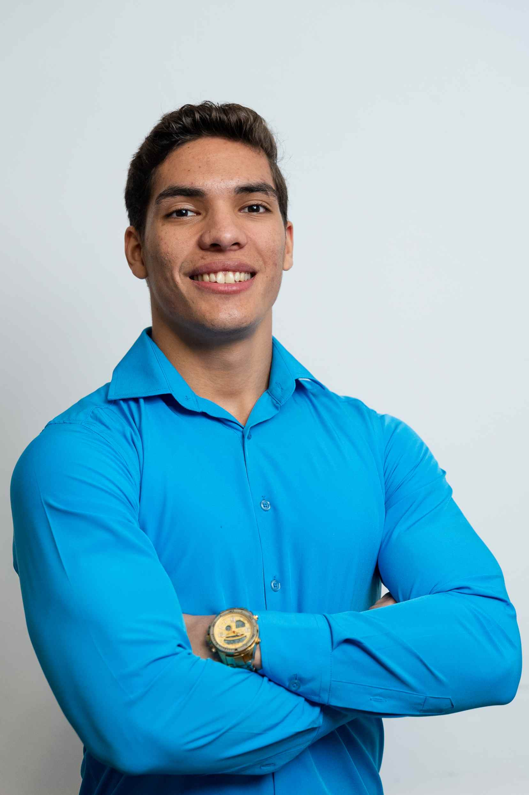

Kenneth Asael Duron Paz
Summary
I'm a dedicated Web Frontend Developer trained at Cumorah Academy in the Czech Republic, with a strong foundation in building dynamic, user-friendly interfaces. I bring hands-on experience in customer service and technical support, as well as a background in electrical automation. Passionate about problem-solving and teamwork, I'm eager to contribute to impactful digital projects through collaboration and innovation.
Work Experience
-
Customer support (remotely) - (Hyundai Capital America)
January 2025 - currently (San Pedro Sula, Cortes, Honduras)
- Manage 70+ daily customer calls, assisting with vehicle financing inquiries.
- Provide principal balances, contract copies, and payoff/buyout quotes.
- Troubleshoot 15+ websites daily to resolve customer issues.
- Process 10+ payments per day with accuracy and compliance.
-
Customer support (remotely) - Collective Solutions (Gen Mobile)
April 2024 - September 2024 (San Pedro Sula, Cortes, Honduras)
- Managed multiple projects simultaneously while ensuring high-quality deliverables.
- Demonstrated problem-solving skills by resolving issues in a efficient manner over 50 calls per day.
- Contributed to the development of innovative marketing strategies that increased revenue over %70.
- Troubleshooted over 70 cellphones per day, ensuring a efficient performance.
-
Customer Service Representative - Avicola Central
December 2021 - January 2022 (El Progreso, Yoro, Honduras)
- Contributed assistance in the care and well-being of animals, including medication administration.
- Managed inventory over 3000 articles, ensuring the availability of pharmaceutical products.
- Provided customer services through appointment scheduling, generating advice on animal handling.
- Maintained records of customer interactions for service improvement.
-
Electrical Technician - Bombas y Motores de Honduras (BOMOHSA)
September 2021 - November 2021 (San Pedro Sula, Cortes, Honduras)
- Designed and automation over 5 electrical panels per week, ensuring efficiency and safety.
- Conducted quality tests on industrial machinery to ensure optimal performance.
- Contributed electromechanical repairing specializing in submersible motors.
- Implemented best practices for wiring and circuit management to enhance efficiency.
Education
-
BRIGHAM YOUNG UNIVERSITY PATHWAY
March 2025 - currently (Načeradec, Pravetice, Czech Republic)
- Software development.
-
CUMORAH ACADEMY
September 2024 - December 2024 (Načeradec, Pravetice, Czech Republic)
- Leadership course and Coding Bootcamp course.
-
CENTRO TECNICO HONDUREÑO ALEMAN (CTHA)
February 2019 - November 2021 (San Pedro Sula, Cortes, Honduras)
- Professional Technical Formation Commercial and Industrial Electricity.
-
CENTRO TECNICO LOYOLA
February 2021 - November 2021 (El Progreso, Yoro, Honduras)
- Repair of appliances and residential electrical work.
Hard Skills
- Illustration & Character Design
- HTML, CSS & Java Script
- Content Development for Social Media Networks
- Native Spanish speaker
- Microsoft Office Suite
- High Intermediate in English.
Soft Skills
- Creativity, Empathy, Resourcefulness, Adaptability
- Communication, Storytelling, Public Speaking
- Work Ethic, Teamwork, Leadership
- Conflict Resolution & Problem Solving